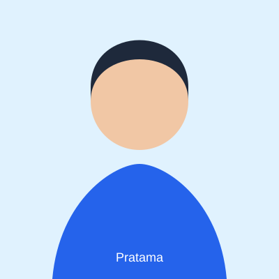

Tentang Saya
Profil Singkat

Saya mahasiswa Teknik Informatika yang tertarik pada pengembangan web. Saya senang menyusun halaman yang mudah dipahami oleh semua orang.
Saat ini saya memperdalam HTML, CSS, dan JavaScript melalui proyek pembelajaran.
Keterampilan
Teknis
- HTML semantik dan aksesibilitas
- Git dan GitHub
- Dasar CSS dan JavaScript
Non-teknis
- Problem solving
- Kerja tim
Fakta Singkat
- Domisili
- Madiun, Jawa Timur
- Bahasa
- Indonesia
- English (membaca dokumentasi teknis)
- Minat
- Web accessibility dan dokumentasi teknis